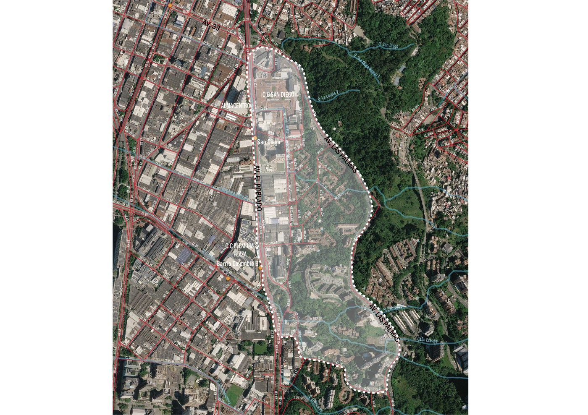

El polígono del San Diego Sur, verificado y aprobado por la Secretaría de Participación Ciudadana del Distrito de Medellín.
Espacio publicitario destacado — disponible para comercios del sector.
Mueve el mapa y haz zoom para ver los límites y los puntos de referencia del sector.

Según la Secretaría de Participación Ciudadana · GeoMed código 1020.
Partiendo del cruce de la Carrera 43A con la Calle 37 (Avenida 33) costado sur, siguiendo la Calle 37 hacia el oriente, empalmando con la Avenida Las Palmas.
Siguiendo la trayectoria de la Avenida Las Palmas hacia el sur, costado occidente, hasta la altura de la Calle 26.
Desde el cruce de la Avenida Las Palmas con la Calle 26, hacia el occidente, al encuentro con la Calle 27; se continúa al nororiente hasta la Calle 28 con la Carrera 43, y por la Calle 28 hasta la Carrera 43A (Avenida El Poblado).
Desde la altura de la Calle 28 sigue por la Carrera 43A costado oriente, hasta la intersección con la Calle 37.
Los mapas entregados por la Alcaldía de Medellín en la constancia de verificación del territorio.